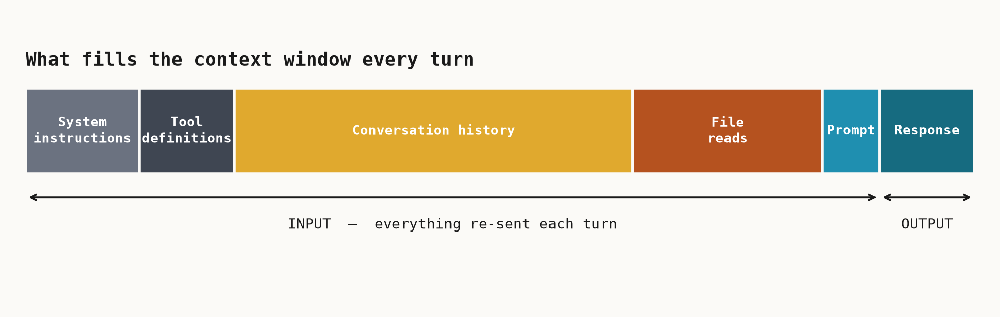

The talk · Tokenmaxxing but make it werk
Work token-aware
Every turn, the agent re-sends the whole conversation to the model: system rules, tool definitions, history, file reads, and your prompt. Under usage-based billing, all of it counts. Context bloat is the single biggest source of waste.

Cheap wins you can use today
- Keep context clean - start a fresh session between unrelated tasks.
- Keep
copilot-instructions.mdlean - it's re-sent every turn. - Reference files, not directories - read one function, not
src/. - Right-size the model - don't run routine edits on the heavy model.
Three-command starter kit in the CLI:
/clear (reset context) · /model (match model to task) · /usage (see what a session cost).